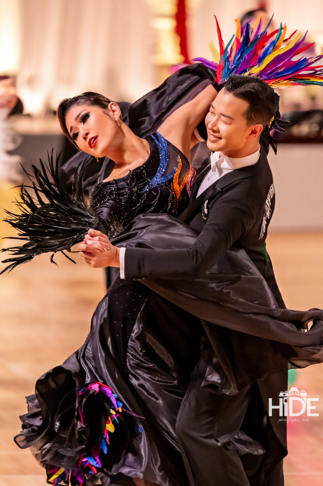
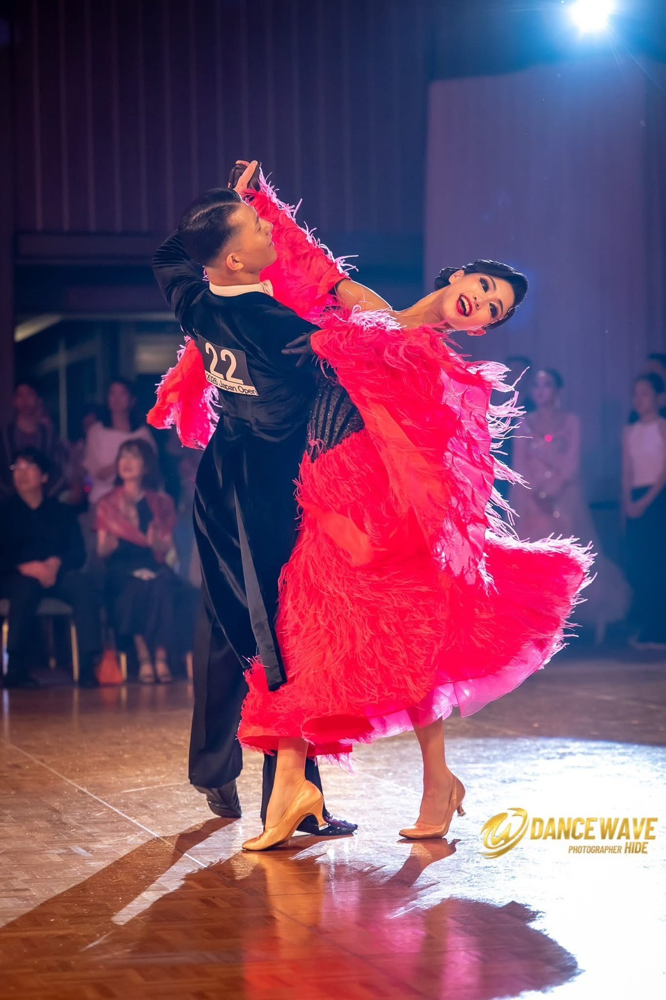
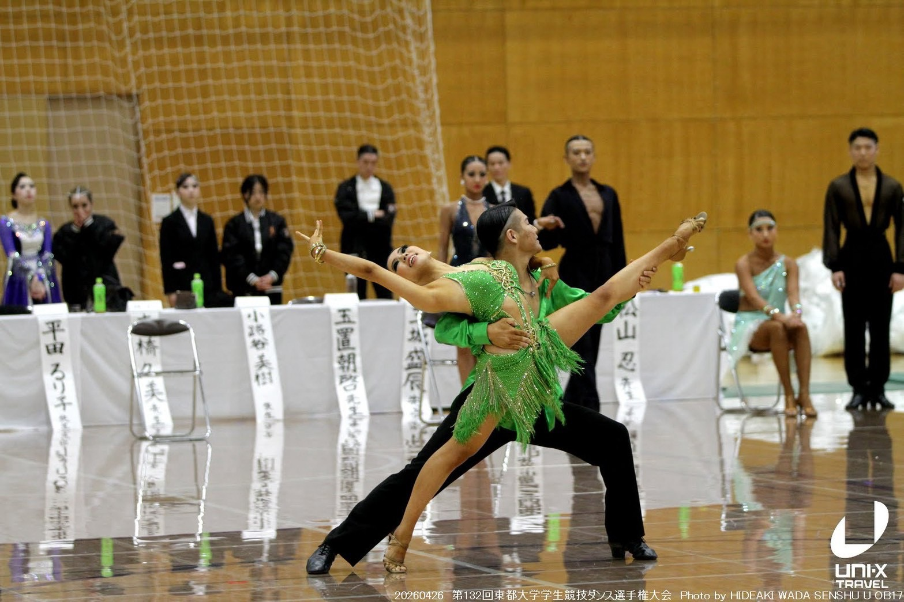
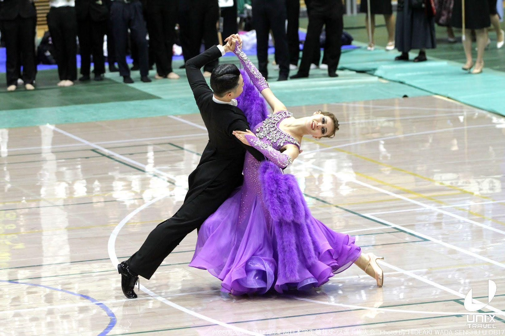

60周年記念展示
舞踏研究部の60年を写真や資料によるギャラリー展示で振り返ります。記念ムービーの放映も検討しています。
Program
見る、話す、踊る。60周年を祝いながら、世代を超えて交流できる一日をつくります。
Event Lineup
各企画の実施順、演目、トライアルの参加方法などは、決定次第更新します。
第一部
会場：東京都立産業貿易センター 台東館 6階展示室
舞踏研究部の60年を写真や資料によるギャラリー展示で振り返ります。記念ムービーの放映も検討しています。
飯塚隆嗣・有村玲音組、矢嶋太門・下垣内咲帆組、柳下真嬉さんが出演します。出演者を見る
若代愼・辰巳友莉亜組（JBDF スタンダードA級）、寺門駿・寺門彩香組（JDC スタンダードA級）によるデモンストレーションです。出演者を見る
参加者がフロアで踊り、世代を超えてダンスを楽しめる企画です。種目や参加方法は後日ご案内します。
踊る方も見る方も楽しめる、現役支援につながる時間を予定しています。
第二部
会場：台東区民会館 9階 特別会議室（特）および（大）
第一部の台東館と同じ建物内です。
台東区民会館9階の特別会議室（特）および（大）で、18:00〜20:00の2時間、ビュッフェ形式・飲み放題付きの懇親会を予定しています。同期、先輩、後輩、現役生、関係者が世代を超えて語り合える交流の時間です。
企画内容・実施順・時間は調整中です。確定情報は60周年記念サイトと申込者向けのご案内でお知らせします。
Demonstration
プロとして活躍するOBOGと現役四年生。世代をつなぐ出演者のダンスを、第一部の会場でお楽しみください。
PRO DEMONSTRATION

JBDF スタンダードA級
若代愼：2010年卒部

JDC スタンダードA級
寺門駿：2015年卒部
4TH YEAR DEMONSTRATION


学習院大学文学部哲学科4年
出演順・演目・出演時刻は、決まり次第ご案内します。